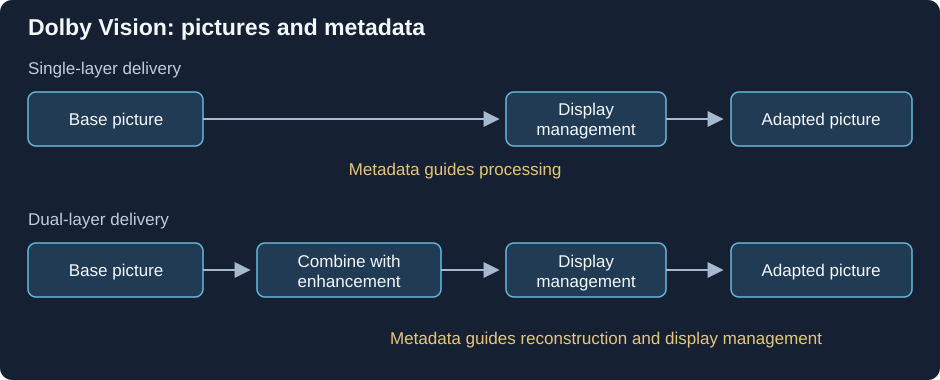

Dolby Vision Base and Enhancement Layers
Dolby Vision can use a base video layer alone or combine it with an enhancement layer and associated metadata.
Start with the diagram's reconstruction roles. A Dolby Vision base layer (BL) contains the main coded picture. An optional enhancement layer (EL) supplies additional reconstruction information, while RPU names accompanying metadata.

Conceptual roles. The selected profile determines the actual signal, packaging, and decoder operations.
Why an enhancement is not a second independent movie
In the UHD Blu-ray workflow, the enhancement can code a residual associated with the base and the prepared Dolby Vision source. The composer uses the relevant base, enhancement, and metadata information to reconstruct the intended signal. Watching the enhancement alone would not perform those operations.
A useful analogy is a correction associated with another representation: its meaning depends on the thing being corrected. The exact Dolby Vision reconstruction also includes its specified transformations, so the diagram is a role description rather than an instruction to add two decoded photographs numerically.
The MEL/FEL distinction identifies whether the enhancement contains a nonzero picture residual. RPU metadata remains another part of the system; enhancement size and metadata presence answer different questions.
Separate three levels of packaging
| Reported item | What it names |
|---|---|
| File | A stored container |
| Video track | A container's selected coded presentation |
| Codec layer and metadata units | Roles inside that presentation |
A muxing arrangement can carry multiple coded layers within one reported video track, while another layout can expose them differently. Counting tracks therefore does not establish the number of reconstruction layers. Inspect the stream's profile and layer indicators.
When can the base layer stand alone?
Profile 7 provides an HDR10-compatible base. A path using that base can show a valid HDR10 picture while leaving the complete Dolby Vision reconstruction unused.
Profile 5 is a single-picture-layer arrangement with Dolby Vision-specific signal interpretation. The presence of a base there does not define the same HDR10 fallback.
For an Emby playback comparison, identify which source layers survive delivery and which operations the decoder performs. A stream-copy operation can preserve selected coded bytes, while removing an enhancement can remove information from the original reconstruction. The resulting picture must be described in terms of the layers and interpretation actually used.